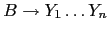
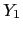
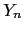
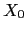
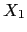
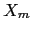

yapp esta inmerso
en la construcción de la antiderivación a derechas y que la forma sentencial
derecha en ese momento es:
y que el mango es

y en la entrada quedan por
procesar
 .
.
Es posible acceder en yapp a los valores de los atributos de los estados en la pila
del analizador que se encuentran ``por debajo'' o si se quiere
``a la izquierda'' de los estados asociados
con la regla por la que se reduce. Para ello se usa una llamada al método
YYSemval. La llamada es de la forma
$_[0]->YYSemval( index ), donde index es un entero.
Cuando se usan los valores 1 ...n devuelve lo mismo
que $_[1], ...$_[n]. Esto es
$_[1] es el atributo asociado con 
y $_[n] es el atributo
asociado con 
. Cuando se usa con el valor
0 devolverá el valor del atributo asociado con el símbolo que esta a la izquierda
del mango actual, esto es el atributo asociado con 
,
si se llama con -1 el que está dos unidades a la izquierda de la variable actual,
esto es, el asociado con 
etc. Así $_[-m] denota el atributo
de 
.
Esta forma de acceder a los atributos es especialmente útil cuando se trabaja con atributos heredados. Esto es, cuando un atributo de un nodo del árbol sintáctico se computa en términos de valores de atributos de su padre y/o sus hermanos. Ejemplos de atributos heredados son la clase y tipo en la declaración de variables. Supongamos que tenemos el siguiente esquema de traducción para calcular la clase (C) y tipo (T) en las declaraciones (D) de listas (L) de identificadores:
| D
|
C T { $L{c} = $C{c}; $L{t} = $T{t} } L |
| C
|
global { $C{c} = "global" } |
| C
|
local { $C{c} = "local" } |
| T
|
integer { $T{t} = "integer" } |
| T
|
float { $T{t} = "float" } |
| L
|
{ $L{t} = $L{t}; $L{c} = $L{c}; } L |
id { set_class($id{v}, $L{c}); set_type($id{v}, $L{t}); } |
|
| L
|
id { set_class($id{v}, $L{c}); set_type($id{v}, $L{t}); } |
Los atributos c y t denotan respectivamente
la clase y el tipo.
global float x,y. Represente el árbol de análisis, las
acciones incrustadas y determine el orden de ejecución.
Olvide por un momento la notación usada en las acciones y
suponga que se tratara de acciones yapp. ¿En que orden
construye yapp el árbol y en que orden ejecutará las
acciones?
A la hora de transformar este esquema de traducción en un programa
yapp es importante darse cuenta que en cualquier derivación a derechas
desde D, cuando se reduce por una de las reglas
el símbolo a la izquierda de L es T y el que esta a la izquierda de T es C. Considere, por ejemplo la derivación a derechas:
Observe que el orden de recorrido de yapp es:
en la antiderivación, cuando el mango es una de las dos reglas
para listas de identificadores, L
 id y L
id y L
 L, id
es decir durante las tres ultimas antiderivaciones:
L, id
es decir durante las tres ultimas antiderivaciones:
las variables a la izquierda del mango son
T y C. Esto ocurre siempre.
Estas observaciones nos conducen al siguiente
programa yapp:
$ cat -n Inherited.yp
1 %token FLOAT INTEGER
2 %token GLOBAL
3 %token LOCAL
4 %token NAME
5
6 %%
7 declarationlist
8 : # vacio
9 | declaration ';' declarationlist
10 ;
11
12 declaration
13 : class type namelist { ; }
14 ;
15
16 class
17 : GLOBAL
18 | LOCAL
19 ;
20
21 type
22 : FLOAT
23 | INTEGER
24 ;
25
26 namelist
27 : NAME
28 { printf("%s de clase %s, tipo %s\n",
29 $_[1], $_[0]->YYSemval(-1),$_[0]->YYSemval(0)); }
30 | namelist ',' NAME
31 { printf("%s de clase %s, tipo %s\n",
32 $_[3], $_[0]->YYSemval(-1),$_[0]->YYSemval(0)); }
33 ;
34 %%
A continuación escribimos el programa que usa
el módulo generado por yapp:
$ cat -n useinherited.pl
1 #!/usr/bin/perl -w
2 use strict;
3 use Inherited;
4
5 sub Error {
6 exists $_[0]->YYData->{ERRMSG}
7 and do {
8 print $_[0]->YYData->{ERRMSG};
9 delete $_[0]->YYData->{ERRMSG};
10 return;
11 };
12 print "Error sintáctico\n";
13 }
14
15 { # hagamos una clausura con la entrada
16 my $input;
17 local $/ = undef;
18 print "Entrada (En Unix, presione CTRL-D para terminar):\n";
19 $input = <stdin>;
20
21 sub scanner {
22
23 { # Con el redo del final hacemos un bucle "infinito"
24 if ($input =~ m|\G\s*INTEGER\b|igc) {
25 return ('INTEGER', 'INTEGER');
26 }
27 elsif ($input =~ m|\G\s*FLOAT\b|igc) {
28 return ('FLOAT', 'FLOAT');
29 }
30 elsif ($input =~ m|\G\s*LOCAL\b|igc) {
31 return ('LOCAL', 'LOCAL');
32 }
33 elsif ($input =~ m|\G\s*GLOBAL\b|igc) {
34 return ('GLOBAL', 'GLOBAL');
35 }
36 elsif ($input =~ m|\G\s*([a-z_]\w*)\b|igc) {
37 return ('NAME', $1);
38 }
39 elsif ($input =~ m/\G\s*([,;])/gc) {
40 return ($1, $1);
41 }
42 elsif ($input =~ m/\G\s*(.)/gc) {
43 die "Caracter invalido: $1\n";
44 }
45 else {
46 return ('', undef); # end of file
47 }
48 redo;
49 }
50 }
51 }
52
53 my $debug_level = (@ARGV)? oct(shift @ARGV): 0x1F;
54 my $parser = Inherited->new();
55 $parser->YYParse( yylex => \&scanner, yyerror => \&Error, yydebug => $debug_level );
En las líneas de la 15 a la 51 esta nuestro analizador léxico.
La entrada se lee en una variable local cuyo valor permanece
entre llamadas: hemos creado una clausura con la variable
$input (véase la sección
![[*]](crossref.png) [4] para mas detalles
sobre el uso de clausuras en Perl). Aunque la variable
[4] para mas detalles
sobre el uso de clausuras en Perl). Aunque la variable $input
queda inaccesible desde fuera de la clausura, persiste entre llamadas
como consecuencia de que la subrutina scanner la utiliza.
A continuación sigue un ejemplo de ejecución:
$ ./useinherited.pl 0 Entrada (En Unix, presione CTRL-D para terminar): global integer x, y, z; local float a,b; x de clase GLOBAL, tipo INTEGER y de clase GLOBAL, tipo INTEGER z de clase GLOBAL, tipo INTEGER a de clase LOCAL, tipo FLOAT b de clase LOCAL, tipo FLOAT
yapp calcula
un árbol de análisis abstracto para la gramática
del ejemplo anterior:
%token FLOAT INTEGER
%token GLOBAL
%token LOCAL
%token NAME
%%
declarationlist
: /* vacio */ { bless [], 'declarationlist' }
| declaration ';' declarationlist { push @{$_[3]}, $_[1]; $_[3] }
;
declaration
: class type namelist
{
bless {class => $_[1], type => $_[2], namelist => $_[3]}, 'declaration';
}
;
class
: GLOBAL { bless { GLOBAL => 0}, 'class' }
| LOCAL { bless { LOCAL => 1}, 'class' }
;
type
: FLOAT { bless { FLOAT => 2}, 'type' }
| INTEGER { bless { INTEGER => 3}, 'type' }
;
namelist
: NAME
{ bless [ $_[1]], 'namelist' }
| namelist ',' NAME
{ push @{$_[1]}, $_[3]; $_[1] }
;
%%
sigue un ejemplo de ejecución:
$ ./useinherited3.pl
Entrada (En Unix, presione CTRL-D para terminar):
global float x,y;
$VAR1 = bless( [
bless( {
'namelist' => bless( [ 'x', 'y' ], 'namelist' ),
'type' => bless( { 'FLOAT' => 2 }, 'type' ),
'class' => bless( { 'GLOBAL' => 0 }, 'class' )
}, 'declaration' )
], 'declarationlist' );
Extienda el programa del ejemplo para que la gramática
incluya las acciones del esquema de traducción.
Las acciones se tratarán como un terminal CODE
y serán devueltas por el analizador léxico. Su atributo
asociado es el texto del código. El programa
yapp deberá devolver el árbol abstracto
extendido con las acciones-terminales.
La parte mas difícil de este problema consiste en ``reconocer''
el código Perl incrustado. La estrategia seguir consiste
en contar el número de llaves que se abren y se cierran.
Cuando el contador alcanza cero es que hemos llegado
al final del código Perl incrustado. Esta estrategia
tiene una serie de problemas. ¿Sabría decir cuáles?
(sugerencia: repase la sección 7.19.3
o vea como yapp resuelve el problema).